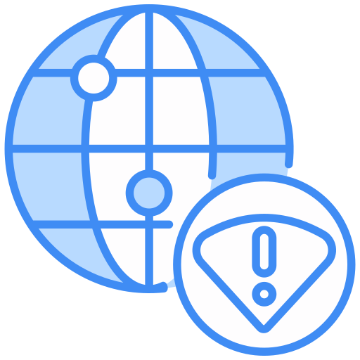

<ion-header class="ion-no-border">
  <ion-toolbar style="--background:white;">
    <ion-title mode="ios">Thông báo</ion-title>
  </ion-toolbar>
</ion-header>
<ion-content>
  <ng-container *ngIf="isloadpage">
    <div class="d-flex align-items-center justify-content-center h-100 w-100">
      <ion-spinner mode="ios" name="dots"></ion-spinner>
    </div>
  </ng-container>
  <ng-container *ngIf="isEmpty">
    <div style="flex-direction: column;" class="d-flex align-items-center justify-content-center h-100">
      
      <ion-text>
        Không có thông báo
      </ion-text>
    </div>
  </ng-container>
  <ng-container *ngIf="!isconnected">
    <div style="flex-direction: column;" class="d-flex align-items-center justify-content-center h-100">
      
      <ion-text>
        Mất kết nối internet
      </ion-text>
    </div>
  </ng-container>
  <ng-container *ngIf="lstData && lstData.length">
    <ion-list>
      <ng-container *ngFor="let item of lstData; trackBy: trackByFn">
        <ion-item lines="none" style="border-bottom: 1px solid #f2f2f2;padding-top: 1em;">
          <ion-card class="w-100" style="margin: 0em;box-shadow: none">
            <ion-card-content style="padding: 0.2em;">
              <div class="d-flex align-items-center">
                <div class="w-100">
                  <ion-text class="font-weight-bold">
                    Trakuaidi xin thông báo tới Quý khách
                  </ion-text>
                  <br>
                  <ion-text>
                    <span [innerHTML]="item.message"></span>
                  </ion-text>
                  <br>
                  <ion-text>
                    <span>Ngày: </span>
                    <span>{{item.createdDate | date : 'dd/MM/yyyy hh:mm a'}}</span>
                  </ion-text>
                </div>
              </div>
            </ion-card-content>
          </ion-card>
        </ion-item>
      </ng-container>
    </ion-list>
  </ng-container>
</ion-content>
